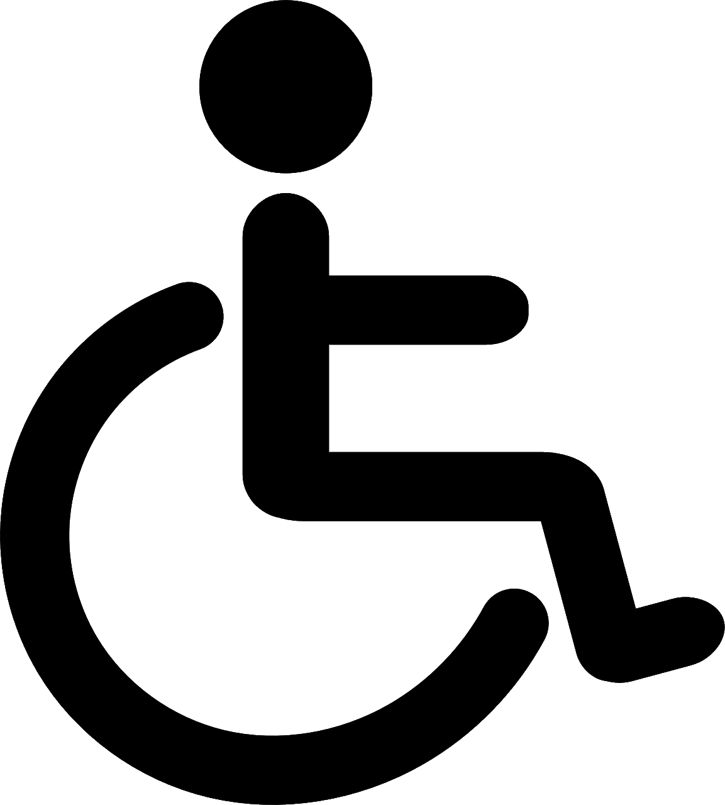

Herzlich Willkommen bei den Stadtwerken Schwedt. Hier finden Sie alle wichtigen und aktuellen Informationen rund um Ihren Nahverkehr in Schwedt und Umgebung.
Neustadt
Linie
Ziel
Steig
Abfahrt
Versp
Weitere Informationen unter: www.stadtwerkeschwedt.de

Dieses Fahrzeug ist barrierefrei.
Ein Unternehmen der Stadt Schwedt.
Servicenummer: 03567 16966782
Öffnungszeiten Kundenzentrum Markt
Mo-Fr 08-18 Uhr
Sa 09-16 Uhr
So geschlossen